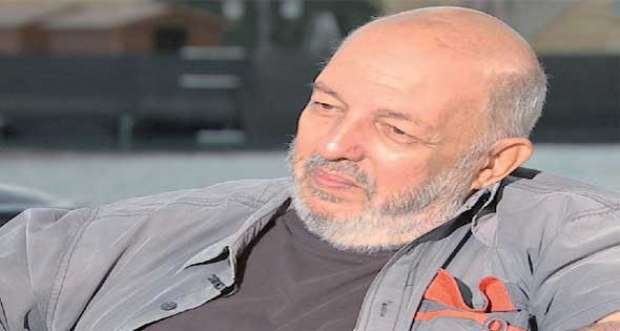
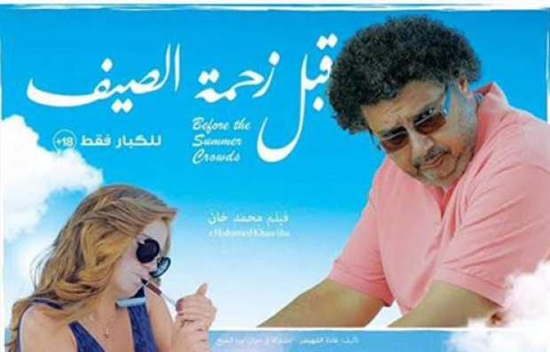

أحدث الأخبار
- الزمالك يكتسح رينجرز النيجيري بأربعة أهداف مقابل هدف وحيد
- القضاء الإداري يقضي بحل اتحاد الكرة وبطلان الانتخابات الأخيرة
- مقتل 3 أشخاص وإصابة 3 آخرين في حادث مروري بالبحيرة
- وزير الخارجية يجري اتصالاً مع رئيس المجلس الرئاسي الليبي
- عاصمة مصر تتجه لزيادة سكانية نصف مليون العام الجاري
- باولو يقود هجوم الزمالك أمام رينجرز في دوري الأبطال
- المالية تعفي المطاعم غير السياحية من ضريبة القيمة المضافة بشروط
- "القضاء الإداري" يلزم الجامعة الأمريكية بتحصيل مصروفاتها بالجنيه المصري
من "هند وكاميليا" إلى "فتاة المصنع" محمد خان يجسد أحلام النساء
كان للمرأة نصيب من أفلام المخرج الراحل، محمد خان، الذي كان مهموما بقضاياها من خلال أفلامه كان آخرها فيلم "قبل زحمة الصيف" الذي يُلقي الضوء على قصة سيدة مطلقة.
والمخرج محمد خان الذي وافته المنية فجر اليوم الثلاثاء، عن عمر 73 عاما، من مواليد 26 أكتوبر 1942.
ولد خان لأب باكستاني وأم مصرية، ويعد أحد أبرز مخرجي السينما الواقعية التي انتشرت بين جيله من السينمائيين نهاية السبعينيات وطوال ثمانينيات القرن الماضي، وانحسر نشاطه السينمائي خلال السنوات الأخيرة وشارك في كتابة 12 قصة من بين أكثر من 20 فيلماً قام بإخراجها.
وتزوج خان من وسام سليمان، كاتبة السيناريو بنات وسط البلد، وفي شقة مصر الجديدة، وفتاة المصنع.
واستطاع المخرج محمد خان أن يعبر عن معاناة الزوجة والمطلقة والأرملة والخادمة وفتاة المصنع وعاملات محلات وسط المدينة والفتاة القادمة من الأقاليم إلى المدينة.

المخرج الراحل محمد خان- الأهرام
نوال الزوجة المقهورة
وخطا محمد خان أولى خطواته نحو قضايا المرأة وعوالمها من خلال فيلمه "موعد مع العشاء" عام 1981، وجسد معاناة الزوجة المقهورة من خلال شخصية نوال التي تعاني إهمال زوجها، ولكن كل هذا تغير في حياتها بعدما اتخذت قرارها بالانفصال عنه، في ظل رفض الزوج وعدم تركها تبدأ حياة جديدة.
زوجة رجل مهم
اختار خان أن يتناول شخصية ضابط المباحث من خلال علاقته بزوجته التي تعاني نوعا آخر من القهر الذي عانته "نوال" في فيلم "موعد على العشاء"، ولذلك قرر أن يكون عنوان الفيلم الذي أخرجه عام 1987 هو "زوجة رجل مهم"، وقدمت مرفت أمين شخصية الزوجة "منى" الفتاة الحالمة التي تركت دراستها بسبب غيرة زوجها وحبه للسلطة حتى أصبحت بلا كيان وبلا هدف نتيجة ارتباطها به.
أحلام هند وكاميليا- يوتيوب
عاملات المنازل
لم ينتبه مخرجو هذا العصر إلى أكثر الفئات معاناة في هذا المجتمع وهي فئة عاملات المنازل وأوضاعهن البائسة وأحلامهن البسيطة في حياة أفضل، إلا أن خان أظهر أنه أكثر وعيا بقضايا المرأة من خلال فيلمه "أحلام هند وكاميليا" عام 1988 الذي جسد معاناة فئة عاملات المنازل والقهر الذي يواجهونه مجتمعيا.
وركز خان في فيلمه على شخصية "هند" الريفية التي تبحث عن سبيل للعيش بعد وفاة زوجها، و"كاميليا" المرأة المطلقة التي تعيش مع شقيقها وتعمل كخادمة لإعالة شقيقها نفسه حتى ولو كان هذا عن طريق الزواج من رجل لا تحبه.
المخرج محمد خان- الأهرام
فتيات الطبقة المتوسطة
قرر خان في فيلمه "بنات وسط البلد" الذي أخرجه عام 2005 الغوص في قلب الطبقة المتوسطة التي تراجعت اقتصاديا واجتماعيا في الثمانينيات من القرن الماضي.
وركز الفيلم على قصة فتاتين، حيث تعمل إحداهما وهي "جومانا" التي تجسد دورها "هند صبري" في محل ملابس جاهزة وهي بنت منطوية ليس لها شخصية، حيث أنها مرتبطة ارتباطا كليا بصديقتها "ياسمين" التي تجسد شخصيتها "منة شلبي" وتعمل في محل كوافير.
الباحثة عن الحب
وفي عام 2007 قدم خان فيلما رومانسيا بنكهة جديدة من خلال فيلمه "في شقة مصر الجديدة" الذي يركز على شخصية نجوى (غادة عادل) وهي صعيدية تحصل على فرصتها الأولى في رؤية القاهرة والحياة بعيدا عن أسرتها وحياتها المغلقة لترى حياة أخرى تماما في مواقف مضحكة ومبكية في دار المغتربات الذي تملكه حياة (عايدة رياض).
في شقة مصر الجديدة- الأهرام
فتاة المصنع
ويروي فيلم "فتاة المصنع"، قصة هيام، وهي فتاة تبلغ من العمر 21 عاما، تعمل مثل بنات حيها الفقير في مصنع ملابس، تعيش تجربة حب إلا أن هذه المشاعر تواجه بعنف مجتمعي ومع ذلك تتجاوز هيام قصتها وتبحث عن قصة جديدة.
ويغوص محمد خان في "فتاة المصنع" في حياة عاملات المصانع وظروفهن المعيشية والواقع الاجتماعي والاقتصادي لهن ولأسرهن.
فتاة المصنع- الشروق
المطلقة
"قبل زحمة الصيف" كان آخر أفلام محمد خان، أُنتج عام 2015 بطولة هنا شيحة وماجد الكدواني، ويسلط الضوء على (هنا شيحة) السيدة المطلقة التي تتصرف بجرأة وحرية مطلقة والتي تتغير بسببها علاقة الزوجين "يحي وماجدة" بعدما كانا يبحثان عن عطلة صيفية هادئة.
وقال عنها محمد خان إنها كانت حالة خاصة ولم يقصد بها المرأة المصرية أو المطلقات عموما.

قبل زحمة الصيف- الأهرام
انتصار للمرأة
ويرى الناقد السينمائي، زين العابدين خيري، أن محمد خان انتصر للمرأة في أفلامه، واعتبره أكثر المخرجين اهتماما بالمرأة وقضاياها حيث ناقشها بعمق في أفلامه وأعطاها البطولة أيضا.
وقال "خان عبر عن المرأة بكل تفاصيلها وفئاتها من الوديعة للرومانسية للمتمردة للريفية والمتحررة وغيرهم، بالإضافة لأن الست كانت أصل الحدوتة ومش على هامشها".
وأضاف "كمان كان دايما بيجيب الست بتحقق أحلامها في الآخر مهما كانت العوائق والظروف حتى لو كانت الأحلام بسيطة".
وأشار إلى أن نموذج المرأة الذي قدمه خان في أفلامه كان مهما ومحركا للأحداث، مستشهدا بفيلم خرج ولم يعد، وفيلم مشوار عمر.
وأوضح أن خان كان يعمل مع مونتيره واحدة هي نادية شكري، مشيرا إلى أنه كان يؤمن بقدرات المرأة ومهاراتها، واتضح ذلك من شراكته مع زوجته الكاتبة وسام سليمان في أكثر من عمل.
وقال خيري إن محمد خان كان يعمل على فيلمه الذي لم يشاء القدر لاستكماله وهو "بنات روزا" وكان أيضا بطولة نسائية ويناقش قضايا النساء.
الاخبار المتعلقة


{kind=link}
تعليقات الفيسبوك